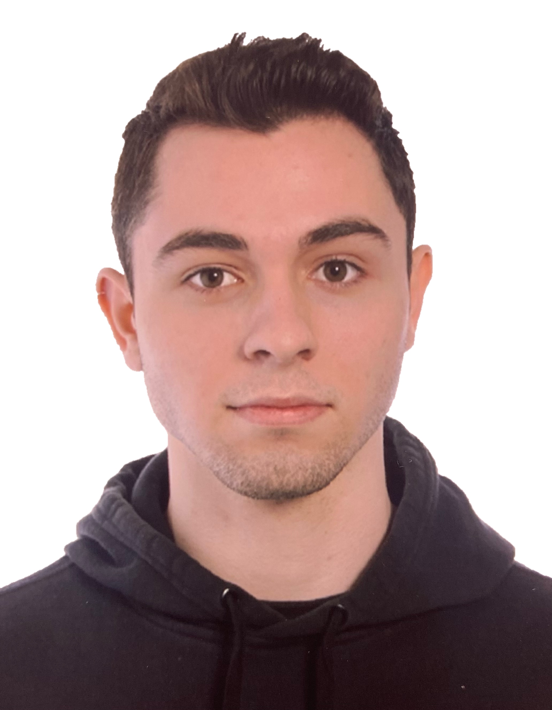

Urtzi Ugarte Pampin
Quién soy
CV
Projectos destacados
Contacto
Informacion de contacto
(+34) 688843145
urtziugartte@gmail.com
Bilbao, Bizkaia
Idiomas
Euskera: Nativo, C1
Castellano: Nativo
Inglés: C2
Francés: B1
OTROS DATOS DE INTERES
Carnet de conducir
Curso de RCP
Uso avanzado del paquete Office (Teams, Excel, Outlook…)
Formación
Técnico superior en desarrollo de aplicaciones web
2024 - Presente | UNIR
Técnico superior de laboratorio clínico y biomédico
2020 - 2022 | Centro de formación Cruz Roja, Bilbao.
Grado en Biología
2017 - 2020 | Universidad del País Vasco, Bilbao.

©Web personal de Urtzi Ugarte